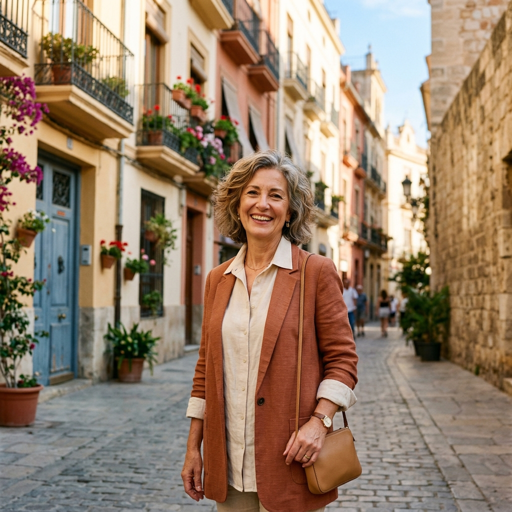

Opera coordinator. Expat. Pioneer. For 16 years, the woman who made impossible productions seamless has been making impossible relocations effortless.

For three decades, I was a master coordinator for large-scale opera productions across Europe. Stadiums in the Netherlands, France, Belgium, Germany. Hundreds of artists, impossible logistics, zero margin for error. If something needed to happen on time, it happened.
That precision, that calm in the face of chaos — that's what I brought to Valencia when my family made the leap in 2004. And it's exactly what I now give to every family I guide.
Opera taught me one essential truth: when you remove friction from creative people's lives, remarkable things happen. The same is true for relocating families. When I clear the bureaucratic maze, families don't just arrive in Valencia — they begin there.
Born in Amsterdam. Graduated from the Amsterdam Conservatory with a focus on production management. Over three decades, I coordinated some of Europe's most ambitious opera productions — from Rotterdam's De Doelen to the Grand Théâtre de Bordeaux, the Concertgebouw, and stadiums across Germany and Belgium. Managing 200-person productions taught me that calm and precision can make anything possible.
My family and I drove south with our lives in boxes. Valencia on a wing and a prayer. What awaited us was a city of extraordinary warmth, colour, and chaos. Spanish bureaucracy nearly broke us. Finding an apartment with no NIE, no local bank account, no understanding of the empadronamiento system — it was genuinely terrifying. But Valencia welcomed us completely, and we knew we were home.
Three years of hard-won experience navigating every corner of Spanish bureaucracy. Three years of learning which offices to call, which forms to file, which appointments to book months in advance. And three years of watching other expat families arrive, lost and overwhelmed, making every mistake I'd already made. The decision was clear: what I'd learned the hard way, I would make effortless for others.
I launched Moving2Valencia with a simple belief: relocating to Spain should be a joy, not a bureaucratic ordeal. The first clients were neighbours who'd heard my story at a dinner party. Word spread. By the end of the first year, I'd guided 12 families through their moves. The opera world's loss was Valencia's gain.
From San Francisco to Singapore, Berlin to Buenos Aires. Families arrive anxious — some with three weeks notice, some with 18-month plans, some with children who don't speak a word of Spanish. They leave with keys in hand, schools enrolled, NIE numbers confirmed, bank accounts open, and neighbours who already know their names. Every single one is a story I carry with pride.
Coordinating 200-person opera productions across five countries builds a level of calm, precision, and problem-solving that no relocation challenge can unsettle.
Since 2008, Christa has personally navigated every corner of Spanish bureaucracy — NIE, TIE, empadronamiento, Hacienda, DGT, Conselleria d'Educació. Nothing is theoretical.
Dutch (native), Spanish (fluent), English (fluent), French (conversational). Christa reads your lease, translates your official letters, and speaks to your children's school on your behalf.
Christa has personally visited every major school in Valencia — public, concertado, British, American, German, IB. Recommendations come from lived experience, not brochures.
From estate agents to gestorías, school principals to NIE appointment insiders — Christa's network means your move happens faster and smoother than anyone else can offer.
500 families relocated. 500 stories. Every single review mentions the same thing: Christa's personal attention, her calm, and her ability to make the impossible feel simple.
"The greatest thing Valencia gave me was purpose. I turned my hardest years into your easiest ones. That exchange means everything to me."— Christa van der Meer, Founder · Moving2Valencia
Book a free 15-minute call with Christa. No pressure, no pitch — just honest conversation about your move.